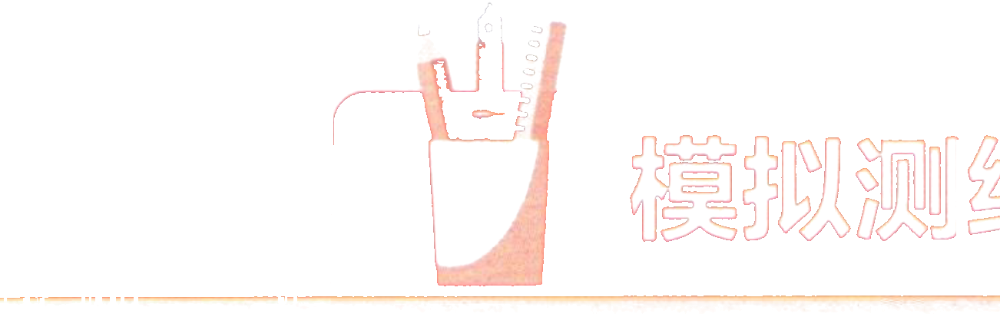
模拟测练Simulated PracticeПрактический тест
一、听力ListeningАудирование 8-2
第一部分Part IЧасть I
第1—3题：听短语，选择正确图片。每题听两次。Questions 1–3: Listen to each phrase and choose the correct picture. Each phrase will be played twice.Задания 1–3: Прослушайте фразы и выберите правильную картинку. Каждая фраза будет проиграна дважды.
sān gè píngguǒ例如： 三个苹果
three applesтри яблока例如：
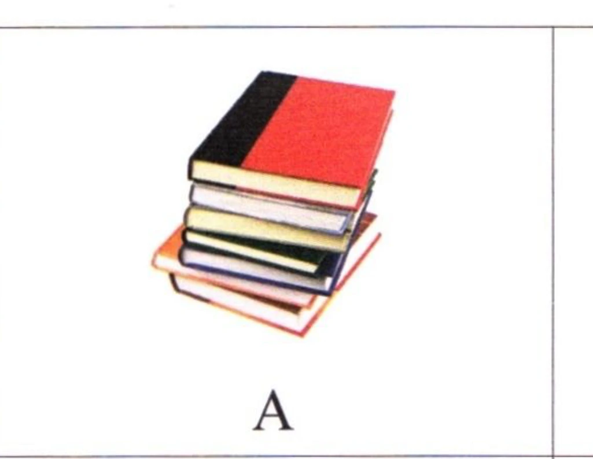
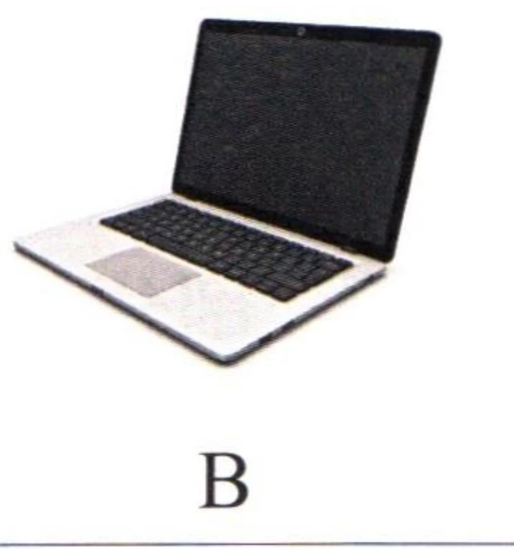
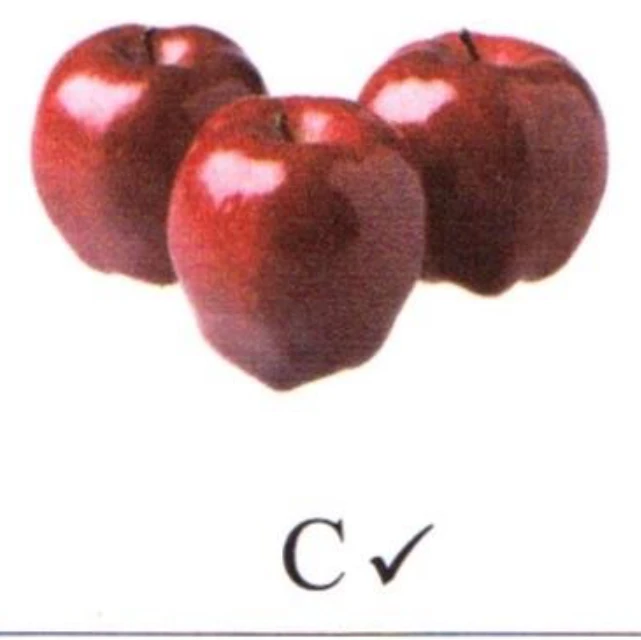
1.
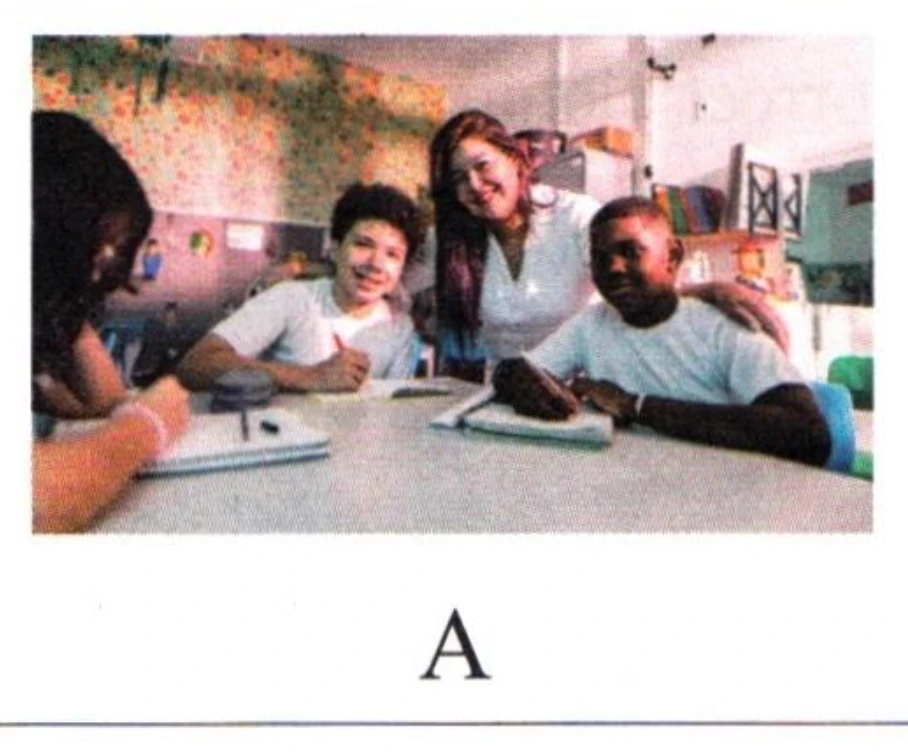
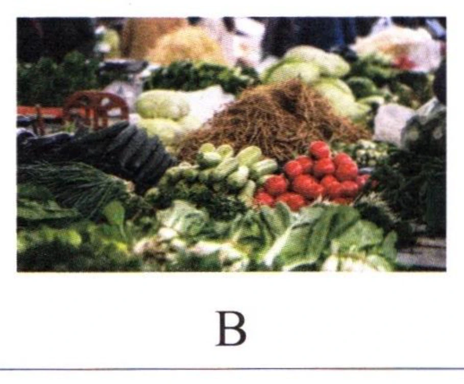
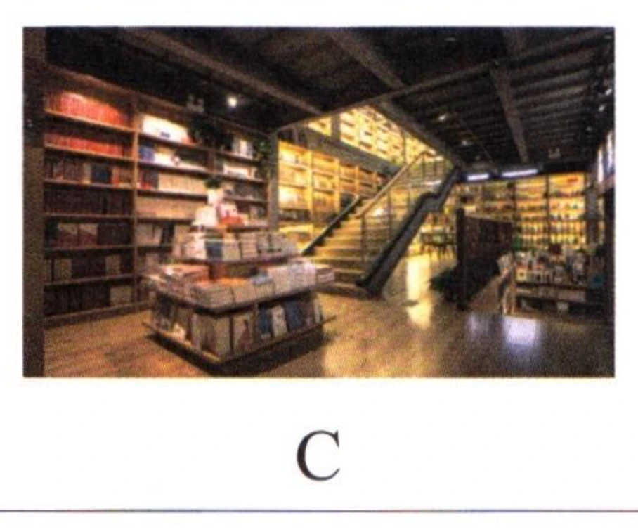
2.
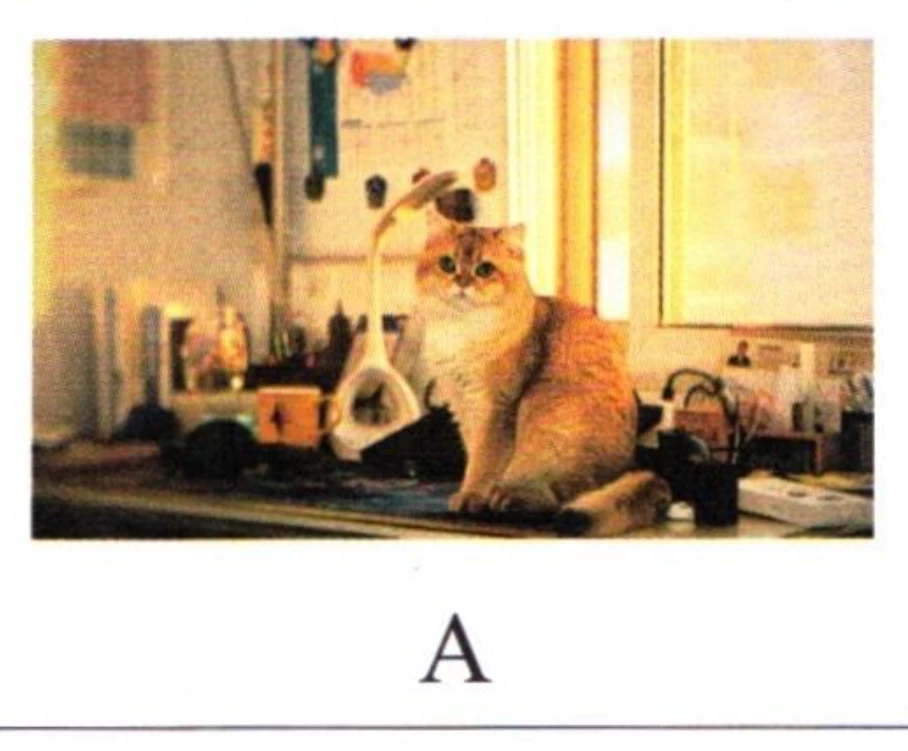
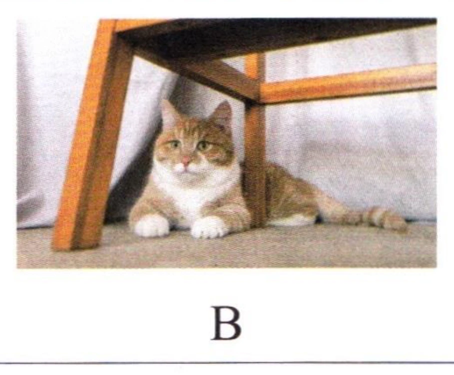
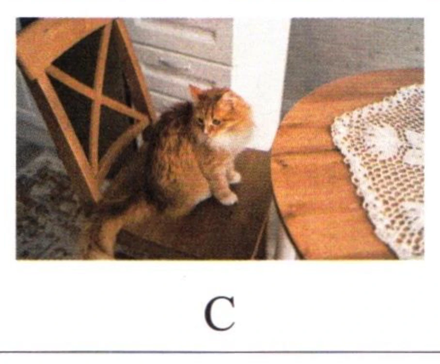
3.
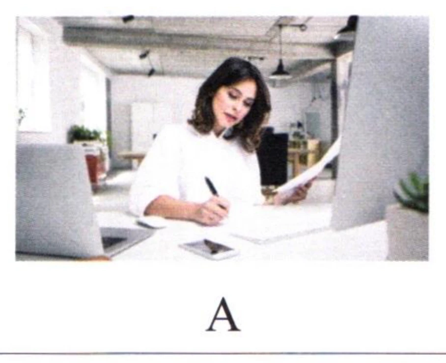
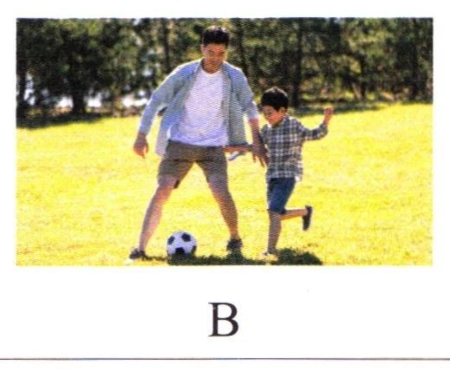
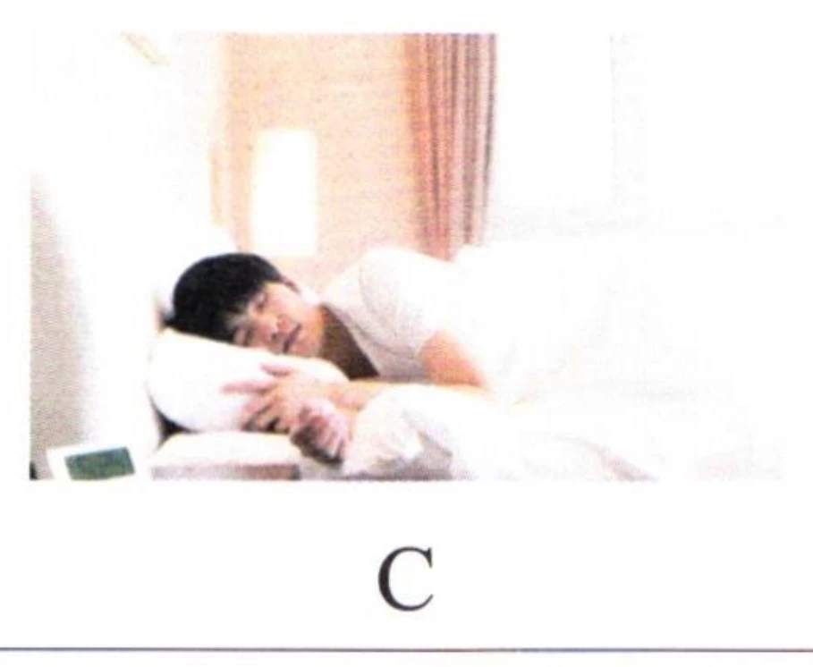